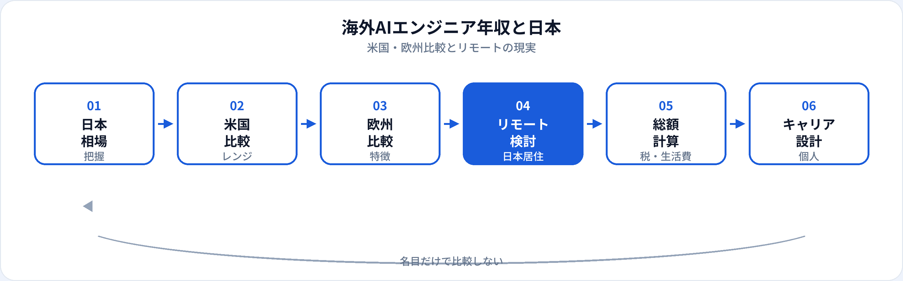

「海外のAIエンジニアは年収が高い」と聞いても、名目のドル額を円換算するだけでは判断できません。米国のTotal Compensation（TC）、欧州の福利厚生、日本居住でのリモート採用では、税・生活費・株式の扱いが異なります。本記事は市場・年収カテゴリとして、日本のベースライン、米国・欧州のレンジ感、日本から働く現実、総額の比較の仕方を整理します。国内相場の詳細はAIエンジニア年収の推移と相場を参照してください。
本記事と国内年収記事の使い分け
| 記事 | 主な内容 | いつ読むか |
|---|---|---|
| 年収の推移と相場（国内） | 日本国内のレンジ・要因・求人の読み方 | 国内転職・交渉の相場感を掴むとき |
| 本記事（海外比較） | 米国・欧州との差、リモート、総額の見方 | 海外企業・グローバル採用を検討するとき |
| AIエンジニアとは | 仕事内容・スキル・国内概算年収 | 職種そのものを理解するとき |
本記事の数字は2026年6月時点の一般的な相場感です。個別のオファー・税務・在留資格は専門家への確認が必要であり、法的・税務的な助言ではありません。
日本のベースライン
当サイトでは、日本国内のAIエンジニアについておおむね500万〜1,200万円を目安レンジとして整理しています（詳細は国内年収記事）。外資系日本法人やAIスタートアップでは、この上限を超えるケースもありますが、米国大手テックの株式込み総額と並べると、同経験帯でも差が出ることが多いです。
比較の出発点として、「日本の正社員・固定給中心」と「海外のTC（ベース＋ボーナス＋株式）」は構造が違うと捉えてください。
米国の年収レンジ
米国では、求人・採用でTotal Compensation（TC）を語ることが一般的です。シリコンバレー・シアトル・NYCなどの大手テック・AI企業を想定した一般論を下表にまとめます（2026年6月時点。個別企業・職位で大きく異なります）。
| 区分 | ベース給（年・USD） | TCの目安（USD） | 円換算の感覚（※） |
|---|---|---|---|
| ジュニア（0〜3年） | 10万〜15万前後 | 12万〜18万前後 | 約1,800万〜2,700万円相当 |
| ミドル（3〜7年） | 15万〜22万前後 | 18万〜30万前後 | 約2,700万〜4,500万円相当 |
| シニア・スタッフ | 20万〜35万以上 | 25万〜50万以上 | 企業・株式で幅が極端に大きい |
※ 為替150円/ドルでの名目換算です。税（連邦・州）、401(k)、医療保険、住宅費は別途かかります。換算額＝手取りや生活のゆとりではありません。
スタートアップの早期メンバーは、ベースは低位でも株式でTCが跳ねる／希釈で実質ゼロになる、両方あり得ます。SIerからAIスタートアップへの視点と同様、総額の内訳を必ず確認してください。
欧州の年収レンジ
欧州は国・都市・雇用形態で差が大きく、米国最上位テックほど一律ではありません。AI・MLエンジニアについて、よく参照される地域のおおまかな感覚は次のとおりです（2026年6月時点の一般論）。
| 地域 | 年収の目安（総額・現地通貨） | 特徴 |
|---|---|---|
| 英国（ロンドン） | £70k〜£150k+（経験・企業による） | 金融・テックで高位。ビザ・税制は別途確認 |
| ドイツ・オランダ等 | €60k〜€120k前後が多い帯 | 福利厚生・労働時間のバランス型が多い |
| 東欧・リモート拠点 | 西欧より低位、米国リモート採用で上振れも | 企業の採用拠点戦略に依存 |
欧州では現金給与の比率が高く、米国型の大量RSUが付きにくい企業もあります。一方、有給・社会保障が厚い国も多く、現金額だけの大小では評価できません。
差がつく主な要因
株式・ボーナス
米国大手はRSU・ストックオプションがTCの大きな割合を占めることがある。日本は固定給＋少額SOが中心のことも。
生活費・住宅
サンフランシスコ湾岸などは家賃・保育が高額。同じTCでも可処分所得は都市で変わる。
税・社会保障
連邦・州税、国民健康保険、日本の所得税・住民税。居住国と所得の発生国で複雑になる場合あり。
企業・職位の定義
「ML Engineer」「Applied Scientist」など職位名とグレードでレンジが変わる。JDの実務内容を要確認。
日本居住・リモート採用の現実
日本に住んだまま海外のAI案件に関わる主な形は、おおむね次の3つです。いずれも英語力・タイムゾーン・実装力が前提になることが多いです。
-
海外企業のフルリモート正社員
日本居住可のグローバル採用。給与はUSD/EUR提示のことも、日本円・現地法人経由のことも。在留資格は雇用形態により異なる。
-
業務委託・コントラクター
時給・月額のUSD契約。単価は魅力的に見えても、社会保険・確定申告・案件安定性は自己管理。副業・業務委託の準備も参照。
-
外資系日本法人・R&D拠点
国内給与体系だが、グローバルと同じ職位グレードを参照するケース。ビザ不要でグローバル協業に近い体験が得られることも。
「日本からリモート＝米国シニア並みのTC」が当たり前ではありません。採用ポリシーで居住国に応じた給与バンドを設ける企業も多く、オファーは個別交渉・市場調査が必要です。
総額で比較する考え方
海外と日本を比較するときは、次のチェックリストで同じ土俵に乗せてください。
-
固定給とTCを分ける
ベース給・賞与・RSU/オプション・サインオンを分離。4年ベストングなどの条件も確認。
-
税引後・生活費後を意識する
名目年収の円換算は参考程度。居住都市の家賃・家族構成で実感は変わる。
-
リスクを価格に入れる
スタートアップ株式、為替、契約更新、ビザ・転勤の可能性。
-
キャリアの次の一手
海外経験がその後の市場価値にどう効くか。スキル（LLM・MLOps等）の方が長期的に効く場合も。
キャリアの取り方
| パターン | メリット | ハードル |
|---|---|---|
| 国内で実績を積み、外資・グローバル採用へ | ビザ・生活の大きな変更が少ない | 英語・非同期コミュニケーション・ポートフォリオ |
| 留学・ワーキングホリデー経由で現地就職 | 現地TC・ネットワークに近い | ビザ、初期コスト、現地競争 |
| 国内AI企業でシニア化し、後から海外へ | 日本市場での設計・運用経験を積める | 国内レンジの上限感、英語の継続学習 |
未経験からいきなり海外シニアTCを狙うより、ポートフォリオと学習ロードマップで国内・リモート案件を積み、英語と実装力を並行して伸ばす道が現実的なことが多いです。
比較の流れ

よくある質問
海外のAIエンジニア年収は日本より高い？
米国大手テックでは同経験帯でTCが高くなることが多いです。生活費・税・株式の条件を含めると単純比較はできません。欧州は国・企業により幅が大きいです。
日本に住んだまま海外企業で働ける？
フルリモート雇用、日本法人、業務委託などがあります。雇用形態・タイムゾーン・税務は個別確認が必要です。
米国のAIエンジニア年収の目安は？
ミドルでベース15万〜22万ドル前後、TC18万〜30万ドル前後になることがある一般論です（2026年6月時点）。シニア・大手ではさらに上振れします。
国内の年収記事はどれを読めばいい？
AIエンジニア年収の推移と相場の見方が国内特化です。本記事は海外比較向けです。
フリーランス単価は別記事がある？
国内の業務委託・副業の相場はAIフリーランスの単価と案件の現実と副業の準備をあわせて参照してください。